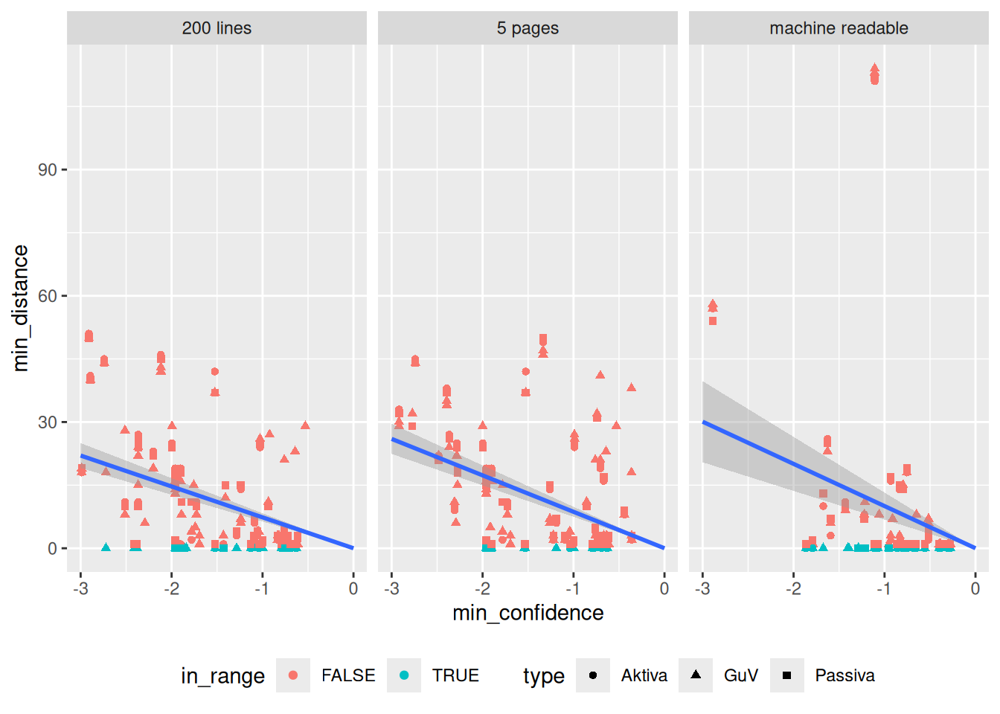
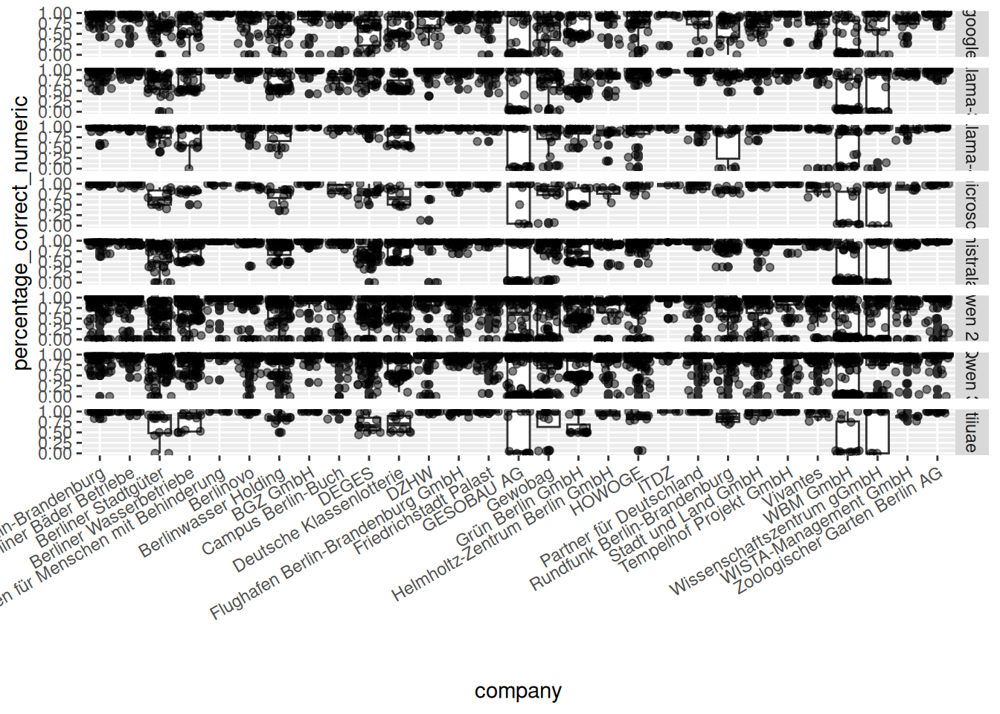
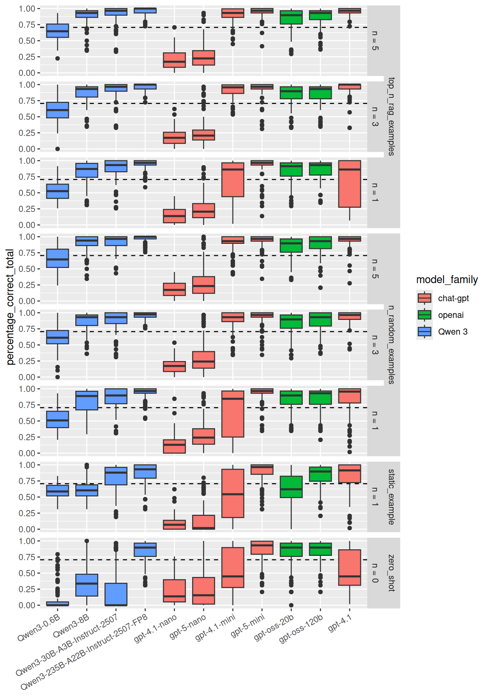
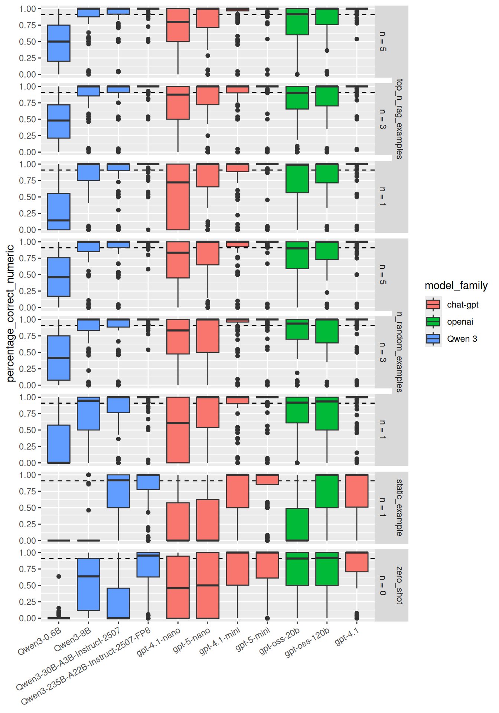

5 Results
5.1 Page identification
As described in 8.2.1 open source libraries have been used to extract the text from the annual reports.
5.1.1 Baseline: Regex
Code
data_page_identification_regex <- readRDS("data_storage/page_identification_regex.rds")
metrics <- data_page_identification_regex$metrics
metric_summaries <- data_page_identification_regex$metric_summaries
metrics_by_company_and_type <- data_page_identification_regex$metrics_by_company_and_type
# Initialize a counter for the total page count
total_pages <- 0
# Get the list of PDF files in the specified directory
pdf_files <- list.files(path = "../Geschaeftsberichte", pattern = "\\.pdf$", full.names = TRUE, recursive = TRUE)
# Loop through each PDF file to count pages
for (pdf_file in pdf_files) {
# Use the pdftools package to count pages
total_pages <- total_pages + pdftools::pdf_info(pdf_file)$pages
}
# all tables that could have been found
data <- read.csv("../benchmark_truth/aktiva_passiva_guv_table_pages_no_ocr.csv")
# Split the "type" column by '&' and explode it into multiple rows
data_unnested <- data %>%
mutate(type = strsplit(as.character(type), "&")) %>%
unnest(type)
num_tables <- data_unnested %>%
nrow()Building a sound regular expression often is an iterative process. In a first approach a very simple one was implemented.
Comparing the differences in the metrics based on the different text extraction libraries it can be said that the extracted text is very similar but not identical. Since the resukts are not depending on the used text extraction library the exhaustive regex restricted has only been run with the fast text extraction library pdfium. The results of the regex based page identification are presented in the following tables.
- look into details where they differ and if it is because of a line break or whitespace ?
Due to the imbalanced distribution of the classes the accuracy is not a good metric to compare the performance of the different methods. The number of pages of interest is much smaller than the number of irrelevant pages. Therefore, precision, recall and F1 score are presented as well.
The regular expressions can be found in the appendix (see 5.1.1).
General bad precision. Increasing recall degrades precision even further. number of pages positive identified total; used as subset for table identification task
Code
metric_summaries["Aktiva"][[1]] %>%
mutate_if(
is.numeric,
~ifelse(
. == max(., na.rm = TRUE),
paste0("**", ., "**"),
.
)
) %>%
arrange(desc(method)) %>%
render_table(
alignment = "llrrr",
caption = "Comparing page identification metrics for different regular expressions for classification task 'Aktiva'",
ref = opts_current$get("label"), dom="t")Code
metric_summaries["Passiva"][[1]] %>%
mutate_if(
is.numeric,
~ifelse(
. == max(., na.rm = TRUE),
paste0("**", ., "**"),
.
)
) %>% arrange(desc(method)) %>%
render_table(alignment="llrrr", caption="Comparing page identification metrics for different regular expressions for classification task 'Passiva'", ref = opts_current$get("label"), dom="t")Code
metric_summaries["GuV"][[1]] %>%
mutate_if(
is.numeric,
~ifelse(
. == max(., na.rm = TRUE),
paste0("**", ., "**"),
.
)
) %>% arrange(desc(method)) %>%
render_table(alignment="llrrr", caption="Comparing page identification metrics for different regular expressions for classification task 'Gewinn- und Verlustrechnung'", ref = opts_current$get("label"), dom="t")Code
metrics %>% bind_rows() %>%
pivot_longer(
cols = -c(package, method, classification_type),
names_to = "metric",
values_to = "value"
) %>%
filter(metric %in% c(
# "acc",
"precision", "recall", "F1")) %>%
ggplot() +
geom_jitter(aes(x = method, y = value, color = package), alpha = 0.5, width = 0.2, height = 0) +
facet_grid(metric~classification_type) +
scale_x_discrete(guide = guide_axis(angle = 30)) +
theme(
legend.position = "bottom"
)
Results by company?
Code
metrics_by_company_and_type %>%
select(company, n_files, method, F1, precision, recall, classification_type) %>%
pivot_longer(cols=c(F1, precision, recall), names_to = "metric") %>%
ggplot() +
geom_boxplot(aes(x = company, y = value, fill = n_files), alpha = 0.5) +
geom_jitter(aes(x = company, y = value, color = method), alpha = 1, height = 0) +
facet_grid(classification_type~metric) +
scale_x_discrete(guide = guide_axis(angle = 30)) +
theme(
legend.position = "bottom"
)
5.1.2 Table of Contents understanding
An optional step for larger documents in Li et al. (2023) framework is to identify the pages of interest based on the table of contents (TOC). This would be more efficent than processing the whole document with an LLM. The TOC in a PDF can be given explicit and machine readable or it can be presented in form of text on any page. Of course it can be missing completely as well.
For a lot of short annual reports one can find the tables of interest within the first eight pages as well.
calculate and add Qwen, Gemini or LLama results? <– No time!
5.1.2.1 Text based
Li et al. (2023) used the table of contents to identify the pages of interest. In their approach the table of contents is extracted from the text. Based on their observation, that the TOC that “ACFRs typically spans no more than the initial 165 lines of the converted document” (p. 20), they use the first 200 lines of text.
My expectation was to find the TOC within the first five pages. Often we find way less than 200 lines of text on the five first pages (see Figure 5.1). Some files are not machine readable without OCR and thus show zero lines in the first five pages as well.
Code

Figure 5.1: Histogram of the number of lines in the first 5 pages of the annual reports
5.1.2.1.1 First five pages
A request to Mistral results in 63 strings that should represent a table of contents among the first five pages [strings not checked in detail].
5.1.2.1.2 First 200 lines
A request to Mistral results in 68 strings that should represent a table of contents among the first five pages [strings not checked in detail].
5.1.2.1.3 Machine readable TOC based
To limit the text and hopefully increase the quality of the input data one can work with the TOC representation embedded within the PDF files. From 80 annual reports 43 files do have a machine readable separate table of contents and 37 do not have one.
One can see that correct predictions for the page range are more probable when the TOC has a medium number of entries. It is possible to drop PDFs with less than 9 without loosing a single correct prediction. This means that for PDFs with TOC with less then 9 entieres the LLM was not able to make a correct prediction. This is not surprising since neither Bilanz nor Gewinn- und Verlustrechnung are mentioned there.
Almost no influence if TOC is passed formated as markdown or json. With the json formated TOC it found two more correct page ranges (single test run). It was testes because the relation page_number heading and value might have been clearer in json for a linear working LLM.
Code

5.1.2.2 Comparison of the different approaches
- toc analysis
- cleaned measures
The LLM performed best on the machine readable TOC. It resulted in highest ratio of correct page ranges as well as in highest absolute numbers even though there were least available TOC.
Code
df_toc_benchmark %>% ggplot() +
geom_bar(aes(x = type, fill = in_range, colour = min_distance <= 1)) +
geom_text(
data = df_toc_benchmark %>% filter(in_range == TRUE),
aes(x = type, label = paste0(round(perc_correct, 2), "")),
stat = "count",
vjust = 1.2,
color = "white"
) +
geom_text(
aes(x = type, label = paste0(round(1-perc_correct, 2), "")),
stat = "count",
vjust = 1.5,
color = "white"
) +
facet_wrap(~benchmark_type, nrow = 1) # +
Figure 5.2: Comparing number of fount TOC and amount of correct and incorrect predicted page ranges
Values can be higher than 80, the total number of PDF files, since there can be multiple tables of interested for the same type in a single document or a table of interest can span two pages. Since the prompt for the LLM was not elaborated enough to cover cases, where there are multiple tables of interest for a single type that are not placed on concurrent pages, one could argue to drop those files from the analysis. This does not change the results significantly, since there are only few files with more than one table of interest per type.
Code
df_toc_benchmark_cleaned <- df_toc_benchmark %>% group_by(filepath, benchmark_type) %>%
mutate(count = n()) %>% filter(count <= 4) %>% group_by(type, benchmark_type) %>%
mutate(
perc_correct = sum(in_range)/n(),
)
df_toc_benchmark_cleaned %>%
ggplot() +
geom_bar(aes(x = type, fill = in_range)) +
geom_text(
data = df_toc_benchmark_cleaned %>% filter(in_range == TRUE),
aes(x = type, label = paste0(round(perc_correct, 2), "")),
stat = "count",
vjust = 1.2,
color = "white"
) +
geom_text(
aes(x = type, label = paste0(round(1-perc_correct, 2), "")),
stat = "count",
vjust = 1.5,
color = "white"
) +
facet_wrap(~benchmark_type, nrow = 1)
Besides a single group that was predicted far off for the machine readable TOC approach the LLM reported higher confidence for the correct page ranges and got the ranges less far off. But it did not predict the smallest ranges.
Code
Code

In general the LLM performed worst to identify the correct page range for Passiva. The median distance is one page bigger than for Aktiva and Gewinn- und Verlustrechnung. This makes sense for Aktiva because the Passiva is often on the next page but the predicted page range for Aktiva and Passiva are often identical. Furthermore the predicted page range for Aktiva is often only a single page wide. Thus the Passiva on the next page is not inside the predicted page range.
This problem was solved by explicitly mentioning that assets and liabilities are both part of the balance sheets for the five pages and 200 lines approach but not for the machine readable TOC one.
Code
balanced_df_toc_benchmark %>% ggplot() +
geom_bar(aes(x = type, fill = in_range, colour = min_distance <= 1)) +
geom_text(
data = balanced_df_toc_benchmark %>% filter(in_range == TRUE),
aes(x = type, label = paste0(round(perc_correct, 2), "")),
stat = "count",
vjust = 1.2,
color = "white"
) +
geom_text(
aes(x = type, label = paste0(round(1-perc_correct, 2), "")),
stat = "count",
vjust = 1.5,
color = "white"
) +
facet_wrap(~benchmark_type, nrow = 1) # +
Figure 5.3: Comparing number of fount TOC and amount of correct and incorrect predicted page ranges
A pragmatic way would be to use the machine readable TOC approachs prediction for the Aktiva page range and add one to the end page to get the Passiva page range. Beside the problem to predict a correct page range for Passiva the machine readable TOC approach was very effective and is also pretty efficient if one counts in the effort the LLM driven TOC extraction takes.
Code
5.1.3 Classification with LLMs
Code
temp_list <- readRDS("data_storage/page_identification_llm.rds")
df_binary <- temp_list$df_binary
df_multi <- temp_list$df_multi
method_families <- c("zero_shot", "law_context", "top_n_rag_examples", "n_random_examples", 'n_rag_examples')
method_familiy_colors <- c(
"zero_shot" = "#e41a1c",
"law_context" = "#377eb8",
"top_n_rag_examples" = "#4daf4a",
"n_random_examples" = "#984ea3",
'n_rag_examples' = "#ff7f00"
)
df_binary <- df_binary %>% filter(!str_detect(model, "gemma") || str_detect(model, "0-9-1")) %>%
mutate(
n_examples = as.numeric(n_examples),
n_examples = if_else(method_family == "zero_shot", 0, n_examples),
n_examples = if_else(method_family == "law_context", 1, n_examples),
method_family = factor(method_family, levels = method_families)
)Code
structured outputs forcing to answer with a yes or no for binary task or with Aktiva, Passiva, GuV or other for multi classification task
top n accuracy
out of company vs in compnay rag
5.1.3.1 Binary classification
Could be more efficient to predict “is any of interest” and then which type, because dataset is highly imbalanced.
24 models from 6 haven been benchmarked among 5 methods
Most models have been used up to 3 examples for the context.
The best combination of model and method for each method family is presented in the following table. It is clear that the Google Gemma models are performing worst.2 Surprisingly Mistral 2410 is the best performing model for all three prediction tasks even though it only has 8B parameters.
Code
df_binary %>%
filter(is.finite(f1_score), loop == 0) %>%
filter(n_examples <= 3 | is.na(n_examples)) %>%
group_by(model_family, classification_type) %>%
filter(f1_score == max(f1_score, na.rm = TRUE)) %>%
# mutate(
# n = n()
# ) %>% filter(n > 1)
arrange(desc(f1_score)) %>% # head(10) %>%
select(model_family, model, classification_type, method_family, n_examples, f1_score, norm_runtime) %>%
mutate(
f1_score = round(f1_score, 2),
norm_runtime = round(norm_runtime, 0),
) %>% rename(
"runtime in s" = norm_runtime,
) %>%
render_table()It is interesting that the predictions do not get better by providing more and more examples. Especially for the n-rag-example approach we find a significant drop in the F1 score if the examples pages come from different companies annual reports. This is caused by a sever recall drop. But also for the n-ranom-example approach we see this for the prediction of class Passiva.
Recall better with examples from same company. Precision better without.
We can also see that the prediction performance is stable.3
Code
df_binary %>% filter(model == "mistralai_Ministral-8B-Instruct-2410", loop < 3) %>%
filter(n_examples <= 5 | is.na(n_examples)) %>%
ggplot(aes(x = norm_runtime, y = f1_score)) +
geom_point(aes(color = method_family, shape = out_of_company), size = 7, alpha = .6) +
scale_shape(na.value = 15, guide = "legend") +
geom_text(aes(label = n_examples)) +
scale_color_manual(values = method_familiy_colors) +
facet_grid(model~classification_type) +
# theme(legend.position = "bottom") +
guides(
color = guide_legend(ncol = 1, title.position = "top"),
shape = guide_legend(ncol = 1, title.position = "top")
)
- f1
- multiple models
- best model detail (different methods / settings)
The experiments for the best performing model, Ministral-8B-Instruct-2410, have been extended by methods with even more examples. Especially for the top-n-rag-example approach to get a better comparable picture based on the real number of examples / context length.
Code
df_binary %>% filter(model == "mistralai_Ministral-8B-Instruct-2410", loop < 2) %>%
filter(n_examples > 1 | is.na(n_examples)) %>%
ggplot(aes(x = norm_runtime, y = f1_score)) +
geom_point(aes(color = method_family, shape = out_of_company), size = 7, alpha = .6) +
scale_shape(na.value = 15, guide = "legend") +
scale_color_manual(values = method_familiy_colors) +
geom_text(aes(label = n_examples)) +
facet_grid(model~classification_type) +
# theme(legend.position = "bottom") +
guides(
color = guide_legend(ncol = 1, title.position = "top"),
shape = guide_legend(ncol = 1, title.position = "top")
)
| approach | classification | n_example | target | other | sum |
|---|---|---|---|---|---|
| n_random_examples | binary | 1 | 1 | 1 | 4 |
| n_random_examples | binary | 3 | 3 | 1 | 6 |
| n_random_examples | binary | 5 | 5 | 2 | 11 |
| n_random_examples | multi | 1 | 1 | 1 | 4 |
| n_random_examples | multi | 3 | 3 | 3 | 12 |
| n_random_examples | multi | 5 | 5 | 5 | 20 |
| n_rag_examples | binary | 1 | 1 | 1 | 4 |
| n_rag_examples | binary | 3 | 3 | 1 | 6 |
| n_rag_examples | binary | 5 | 5 | 2 | 11 |
| n_rag_examples | multi | 1 | 1 | 1 | 4 |
| n_rag_examples | multi | 3 | 3 | 3 | 12 |
| n_rag_examples | multi | 5 | 5 | 5 | 20 |
| top_n_rag_examples | binary | 1 | NA | NA | 1 |
| top_n_rag_examples | binary | 3 | NA | NA | 3 |
| top_n_rag_examples | binary | 5 | NA | NA | 5 |
| top_n_rag_examples | binary | 7 | NA | NA | 7 |
| top_n_rag_examples | binary | 9 | NA | NA | 9 |
| top_n_rag_examples | binary | 11 | NA | NA | 11 |
| top_n_rag_examples | binary | 13 | NA | NA | 13 |
| top_n_rag_examples | multi | 1 | NA | NA | 1 |
| top_n_rag_examples | multi | 3 | NA | NA | 3 |
| top_n_rag_examples | multi | 5 | NA | NA | 5 |
| top_n_rag_examples | multi | 7 | NA | NA | 7 |
| top_n_rag_examples | multi | 9 | NA | NA | 9 |
| top_n_rag_examples | multi | 11 | NA | NA | 11 |
| top_n_rag_examples | multi | 13 | NA | NA | 13 |
Predictions very accurate. Confidence not always 1. Wrong predictions with often with medium confidence. If Aktiva and Passiva on same page more often Aktiva predicted. Confidence for no displayed as 1-confidence to represent confidence for yes (binary classification).
Code
df_filtered <- df_binary %>% filter(classification_type == "Aktiva") %>%
arrange(desc(f1_score))
df_temp <- df_filtered[1,"predictions"][[1]][[1]] %>% as_tibble()
df_flipped_score <- df_temp %>%
mutate(
confidence_score = if_else(predicted_type == "no", 1-confidence_score, confidence_score),
is_aktiva = str_detect(type, "Aktiva")
)
model_name_best_f1_aktiva <- df_filtered[1, "model"]
method__best_f1_aktiva <- df_filtered[1, "method"]
df_flipped_score %>%
ggplot() +
geom_boxplot(aes(x = predicted_type, y = confidence_score)) +
geom_jitter(aes(x = predicted_type, y = confidence_score, color = match), alpha = .3, height = 0) +
facet_wrap(~type) +
labs(title = model_name_best_f1_aktiva,
subtitle = method__best_f1_aktiva)
Qwen returns always high confidence even if it is wrong.
Code
df_filtered <- df_binary %>% filter(classification_type == "Aktiva", model_family=="Qwen") %>%
arrange(desc(f1_score))
df_temp <- df_filtered[1,"predictions"][[1]][[1]] %>% as_tibble()
df_flipped_score <- df_temp %>%
mutate(
confidence_score = if_else(predicted_type == "no", 1-confidence_score, confidence_score),
is_aktiva = str_detect(type, "Aktiva")
)
model_name_best_f1_aktiva <- df_filtered[1, "model"]
method__best_f1_aktiva <- df_filtered[1, "method"]
df_flipped_score %>%
ggplot() +
geom_boxplot(aes(x = predicted_type, y = confidence_score)) +
geom_jitter(aes(x = predicted_type, y = confidence_score, color = match), alpha = .3, height = 0) +
facet_wrap(~type) +
labs(title = model_name_best_f1_aktiva,
subtitle = method__best_f1_aktiva)- IBB other law
- degewo only one where no ocr is needed
mistral: recall IBB and Netzholding big range meta & mistral: very high precision for Amt für Statistik BBB <- lowest average pagecount (29.3) but IBB has more pages than berlinovo but better precision. No information about which company / report the page is from
Code
no_ocr_needed <- read_csv("../benchmark_truth/aktiva_passiva_guv_table_pages_no_ocr.csv") %>% select(filepath) %>%
unique() %>% mutate(filepath = str_replace(filepath, "..", "/pvc")) %>% .[[1]]
l <- list()
for (t in c('Aktiva', 'Passiva', 'GuV')) {
df_filtered <- df_binary %>% filter(classification_type == t) %>%
arrange(desc(f1_score)) %>% select(model, method, predictions, model_family, method_family)
df_temp <- df_filtered %>% unnest(predictions) %>% filter(filepath %in% no_ocr_needed)
df_f1_by_company <- df_temp %>% group_by(company, predicted_type, match, model,model_family, method, method_family) %>% reframe(
n = n()
) %>% complete(company, predicted_type, match, model,model_family, method, method_family,fill=list(n=0)) %>%
mutate(
metric = if_else(predicted_type == t & match, "true_positive", ''),
metric = if_else(predicted_type == t & !match, "false_positive", metric),
metric = if_else(predicted_type != t & !match, "false_negative", metric),
metric = if_else(predicted_type != t & match, "true_negative", metric),
) %>% select(-predicted_type, -match) %>%
pivot_wider(names_from = metric, values_from = n) %>%
mutate(
precision = true_positive/(true_positive+false_positive),
recall = true_positive/(true_positive+false_negative),
f1_score = 2*precision*recall/(precision+recall),
classification_type = t
)
l[t] <- list(df_f1_by_company)
}
df_f1_by_company <- bind_rows(l)
df_f1_by_company %>%
filter(!model_family %in% c('microsoft', 'tiiuae')) %>%
ggplot() +
geom_boxplot(aes(x = company, y = f1_score)) +
# geom_jitter(aes(x = company, y = f1_score, color = model), alpha = .4) +
facet_grid(classification_type~model_family) +
scale_x_discrete(guide = guide_axis(angle = 30))Code
n_reports_by_company_no_ocr <- df_temp %>% select(company, filepath) %>% unique() %>% group_by(company) %>% reframe(n = n())
n_reports_by_company <- df_filtered %>% unnest(predictions) %>% select(company, filepath) %>% unique() %>% group_by(company) %>% reframe(n = n())
n_reports_by_company_no_ocr %>% kbl()| company | n |
|---|---|
| Amt für Statistik Berlin-Brandenburg | 10 |
| Berlin Energie und Netzholding | 3 |
| Berliner Bäder Betriebe | 10 |
| Berlinovo | 15 |
| GESOBAU AG | 13 |
| IBB | 22 |
| degewo AG | 1 |
| company | n |
|---|---|
| Amt für Statistik Berlin-Brandenburg | 10 |
| Berlin Energie und Netzholding | 3 |
| Berliner Bäder Betriebe | 10 |
| Berlinovo | 15 |
| GESOBAU AG | 13 |
| IBB | 22 |
| degewo AG | 7 |
- Performance makes a jump at a critical parameter number (3B) then slow increase (compare Qwen 2.5)
- Changes unsystematic with new models (see Mistral, Qwen 3 old vs llama 4)
PR curves for all classes look very alike- showing micro average curve
Code
library(PRROC)
library(patchwork)
model_rank <- 1
l_temp <- list()
for (target in c('Aktiva', 'GuV', 'Passiva')) {
t <- "Aktiva"
df_filtered <- df_binary %>% filter(classification_type == t,
loop == 0) %>%
arrange(desc(f1_score))
model_name_best_f1_aktiva <- df_filtered[model_rank, "model"]
method__best_f1_aktiva <- df_filtered[model_rank, "method"]
df_filtered <- df_binary %>%
filter(
classification_type == target,
model == model_name_best_f1_aktiva,
method == method__best_f1_aktiva,
loop == 0
) %>%
arrange(desc(f1_score))
df_temp <- df_filtered[1,"predictions"][[1]][[1]] %>% as_tibble()
df_flipped_score <- df_temp %>%
mutate(
confidence_score = if_else(predicted_type == "no", 1-confidence_score, confidence_score),
target = target
)
l_temp[target] <- list(df_flipped_score)
}
df_temp2 <- bind_rows(l_temp) # %>% filter(target == "Passiva")
# plot(pr_obj, color = "orange", main = "Precision-Recall Curve")
pr_obj <- pr.curve(scores.class0 = df_temp2$confidence_score[df_temp2$match == 1],
scores.class1 = df_temp2$confidence_score[df_temp2$match == 0],
curve = TRUE)
# Precision-Recall Curve with ggplot2
pr_df <- tibble(
recall = pr_obj$curve[, 1],
precision = pr_obj$curve[, 2],
threshold = pr_obj$curve[, 3]
) %>%
mutate(f1 = 2 * precision * recall / (precision + recall))
pr_auc <- round(pr_obj$auc.integral, 3)
g1 <- pr_df %>%
ggplot(aes(x = recall, y = precision)) +
geom_line(aes(color = threshold), size = 1.2) +
scale_color_viridis_c(option = "plasma") +
labs(
title = str_c("Precision-Recall Curve (AUC = ", pr_auc, ")"),
subtitle = str_c(model_name_best_f1_aktiva, " with ", method__best_f1_aktiva),
x = "Recall",
y = "Precision"
) +
coord_cartesian(ylim = c(0,1)) +
theme(
legend.position = "bottom"
)
g2 <- pr_df %>%
ggplot(aes(x = recall, y = precision, color = f1)) +
geom_line(size = 1.2) +
scale_color_viridis_c(option = "viridis") +
labs(
# title = "Precision-Recall Curve colored by F1 score",
x = "Recall",
y = NULL,
color = "F1 score"
) +
coord_cartesian(ylim = c(0,1))+
theme(
legend.position = "bottom"
)
g1 + g2
Code
library(PRROC)
library(patchwork)
l_temp <- list()
for (target in c('Aktiva', 'GuV', 'Passiva')) {
t <- "Aktiva"
df_filtered <- df_binary %>% filter(classification_type == t,
loop == 0) %>%
arrange(desc(f1_score))
model_rank <- as.integer(nrow(df_filtered)*0.8)
model_name_best_f1_aktiva <- df_filtered[model_rank, "model"]
method__best_f1_aktiva <- df_filtered[model_rank, "method"]
df_filtered <- df_binary %>%
filter(
classification_type == target,
model == model_name_best_f1_aktiva,
method == method__best_f1_aktiva,
loop == 0
) %>%
arrange(desc(f1_score))
df_temp <- df_filtered[1,"predictions"][[1]][[1]] %>% as_tibble()
df_flipped_score <- df_temp %>%
mutate(
confidence_score = if_else(predicted_type == "no", 1-confidence_score, confidence_score),
target = target
)
l_temp[target] <- list(df_flipped_score)
}
df_temp2 <- bind_rows(l_temp) # %>% filter(target == "Passiva")
# plot(pr_obj, color = "orange", main = "Precision-Recall Curve")
pr_obj <- pr.curve(scores.class0 = df_temp2$confidence_score[df_temp2$match == 1],
scores.class1 = df_temp2$confidence_score[df_temp2$match == 0],
curve = TRUE)
# Precision-Recall Curve with ggplot2
pr_df <- tibble(
recall = pr_obj$curve[, 1],
precision = pr_obj$curve[, 2],
threshold = pr_obj$curve[, 3]
) %>%
mutate(f1 = 2 * precision * recall / (precision + recall))
pr_auc <- round(pr_obj$auc.integral, 3)
g1 <- pr_df %>%
ggplot(aes(x = recall, y = precision)) +
geom_line(aes(color = threshold), size = 1.2) +
scale_color_viridis_c(option = "plasma") +
labs(
title = str_c("Precision-Recall Curve (AUC = ", pr_auc, ")"),
subtitle = str_c(model_name_best_f1_aktiva, " with ", method__best_f1_aktiva),
x = "Recall",
y = "Precision"
) +
coord_cartesian(ylim = c(0,1)) +
theme(
legend.position = "bottom"
)
g2 <- pr_df %>%
ggplot(aes(x = recall, y = precision, color = f1)) +
geom_line(size = 1.2) +
scale_color_viridis_c(option = "viridis") +
labs(
# title = "Precision-Recall Curve colored by F1 score",
x = "Recall",
y = NULL,
color = "F1 score"
) +
coord_cartesian(ylim = c(0,1))+
theme(
legend.position = "bottom"
)
g1 + g2
5.1.3.2 Multi classification
bigger models are better with the multi classification task Llama-4-Scout almost perfect F1 for all classes
Llama-4-Scout runs fast but needs long to load because it has 109B in total with 17B actives Gemma performs much better than with binary classification
drop with Qwen-14B
Code
df_multi %>%
unnest(metrics) %>%
filter(metric_type %in% c("Aktiva", "Passiva", "GuV")) %>%
filter(is.finite(f1_score), loop == 0) %>%
filter(n_examples <= 3 | is.na(n_examples)) %>%
group_by(model_family, metric_type) %>%
filter(f1_score == max(f1_score, na.rm = TRUE)) %>%
arrange(desc(f1_score)) %>% # head(10) %>%
select(model_family, model, metric_type, method_family, n_examples, f1_score, norm_runtime) %>%
mutate(
f1_score = round(f1_score, 2),
norm_runtime = round(norm_runtime, 0),
) %>% rename(
"runtime in s" = norm_runtime,
) %>%
render_table()Code
# df_multi %>%
# unnest(metrics) %>%
# filter(metric_type %in% c("micro_minorities")) %>%
# filter(is.finite(f1_score), loop == 0) %>%
# filter(n_examples <= 3 | is.na(n_examples)) %>%
# group_by(model_family, metric_type) %>%
# filter(f1_score == max(f1_score, na.rm = TRUE)) %>%
# arrange(desc(f1_score)) %>% # head(10) %>%
# select(model_family, model, metric_type, method_family, n_examples, f1_score, norm_runtime) %>%
# mutate(
# f1_score = round(f1_score, 2),
# norm_runtime = round(norm_runtime, 0),
# ) %>% rename(
# "runtime in s" = norm_runtime,
# ) Mistral-8B-2410 almost as good as Mistral-123B-2411 but much faster
Code
df_multi %>%
unnest(metrics) %>%
filter(metric_type %in% c("Aktiva", "Passiva", "GuV")) %>%
filter(is.finite(f1_score), loop == 0) %>%
filter(parameter_count<15) %>%
filter(n_examples <= 3 | is.na(n_examples)) %>%
group_by(model_family, metric_type) %>%
filter(f1_score == max(f1_score, na.rm = TRUE)) %>%
arrange(desc(f1_score)) %>% # head(10) %>%
select(model_family, model, metric_type, method_family, n_examples, f1_score, norm_runtime) %>%
mutate(
f1_score = round(f1_score, 2),
norm_runtime = round(norm_runtime, 0),
) %>% rename(
"runtime in s" = norm_runtime,
) %>%
render_table()Mistral-2410 reaches good performance already with few examples and can work with law-context approach but more examples don’t realy help any further
Code
df_selected <- df_multi %>% unnest(metrics) %>% filter(metric_type == "Aktiva")
df_selected %>%
filter(model %in% c(
"mistralai_Ministral-8B-Instruct-2410",
# "mistralai_Mistral-Large-Instruct-2411",
# "mistralai_Mistral-Small-3.1-24B-Instruct-2503",
"meta-llama_Llama-4-Scout-17B-16E-Instruct"
# "meta-llama_Llama-4-Maverick-17B-128E-Instruct-FP8"
)) %>%
ggplot(aes(x = norm_runtime, y = f1_score)) +
geom_point(aes(color = method_family, shape = out_of_company), size = 7, alpha = .6) +
scale_shape(na.value = 15, guide = "legend") +
geom_text(aes(label = n_examples)) +
facet_grid(model~metric_type) +
scale_color_manual(values = method_familiy_colors) #+Code
Most of the time pretty confident most problems with class “other” If Aktiva and Passiva on same page it predicts Aktiva. Also one Passiva missclassified as Aktiva No flipped confidence 4
Code
df_filtered <- df_selected %>%
arrange(desc(f1_score))
df_temp <- df_filtered[1,"predictions"][[1]][[1]] %>% as_tibble()
df_flipped_score <- df_temp %>%
mutate(
confidence_score = if_else(predicted_type == "no", 1-confidence_score, confidence_score),
is_aktiva = str_detect(type, "Aktiva")
)
model_name_best_f1_aktiva <- df_filtered[1, "model"]
method__best_f1_aktiva <- df_filtered[1, "method"]
df_flipped_score %>%
ggplot() +
geom_boxplot(aes(x = predicted_type, y = confidence_score)) +
geom_jitter(aes(x = predicted_type, y = confidence_score, color = match), alpha = .3, height = 0) +
facet_wrap(~type) +
labs(title = model_name_best_f1_aktiva,
subtitle = method__best_f1_aktiva)
Microsoft phi 4 and Falcon 3 only ran with one and two examples because their context window is smaller.
- f1
- multiple models
- best model detail (different methods / settings)
Code
library(PRROC)
library(patchwork)
model_rank <- 1
df_selected <- df_multi %>% unnest(metrics)
df_filtered <- df_selected %>% filter(
metric_type == "micro_minorities"
) %>%
arrange(desc(f1_score))
df_temp <- df_filtered[model_rank,"predictions"][[1]][[1]] %>% as_tibble()
model_name_best_f1_aktiva <- df_filtered[model_rank, "model"]
method__best_f1_aktiva <- df_filtered[model_rank, "method"]
pr_obj <- pr.curve(scores.class0 = df_temp$confidence_score[df_temp$match == 1],
scores.class1 = df_temp$confidence_score[df_temp$match == 0],
curve = TRUE)
# plot(pr_obj, color = "orange", main = "Precision-Recall Curve")
# Precision-Recall Curve with ggplot2
pr_df <- tibble(
recall = pr_obj$curve[, 1],
precision = pr_obj$curve[, 2],
threshold = pr_obj$curve[, 3]
) %>%
mutate(f1 = 2 * precision * recall / (precision + recall))
pr_auc <- round(pr_obj$auc.integral, 3)
g1 <- pr_df %>%
ggplot(aes(x = recall, y = precision)) +
geom_line(aes(color = threshold), size = 1.2) +
scale_color_viridis_c(option = "plasma") +
labs(
title = str_c("Precision-Recall Curve (AUC = ", pr_auc, ")"),
subtitle = str_c(model_name_best_f1_aktiva, " with ", method__best_f1_aktiva),
x = "Recall",
y = "Precision"
) +
coord_cartesian(ylim = c(0,1)) +
theme(
legend.position = "bottom"
)
g2 <- pr_df %>%
ggplot(aes(x = recall, y = precision, color = f1)) +
geom_line(size = 1.2) +
scale_color_viridis_c(option = "viridis") +
labs(
# title = "Precision-Recall Curve colored by F1 score",
x = "Recall",
y = NULL,
color = "F1 score"
) +
coord_cartesian(ylim = c(0,1))+
theme(
legend.position = "bottom"
)
g1 + g2
Code
library(PRROC)
library(patchwork)
df_selected <- df_multi %>% unnest(metrics)
df_filtered <- df_selected %>% filter(
metric_type == "micro_minorities",
loop == 0
) %>%
arrange(desc(f1_score))
model_rank <- as.integer(nrow(df_filtered)*0.8)
model_name_best_f1_aktiva <- df_filtered[model_rank, "model"]
method__best_f1_aktiva <- df_filtered[model_rank, "method"]
df_temp <- df_filtered[model_rank,"predictions"][[1]][[1]] %>% as_tibble()
pr_obj <- pr.curve(scores.class0 = df_temp$confidence_score[df_temp$match == 1],
scores.class1 = df_temp$confidence_score[df_temp$match == 0],
curve = TRUE)
# plot(pr_obj, color = "orange", main = "Precision-Recall Curve")
# Precision-Recall Curve with ggplot2
pr_df <- tibble(
recall = pr_obj$curve[, 1],
precision = pr_obj$curve[, 2],
threshold = pr_obj$curve[, 3]
) %>%
mutate(f1 = 2 * precision * recall / (precision + recall))
pr_auc <- round(pr_obj$auc.integral, 3)
g1 <- pr_df %>%
ggplot(aes(x = recall, y = precision)) +
geom_line(aes(color = threshold), size = 1.2) +
scale_color_viridis_c(option = "plasma") +
labs(
title = str_c("Precision-Recall Curve (AUC = ", pr_auc, ")"),
subtitle = str_c(model_name_best_f1_aktiva, " with ", method__best_f1_aktiva),
x = "Recall",
y = "Precision"
) +
coord_cartesian(ylim = c(0,1)) +
theme(
legend.position = "bottom"
)
g2 <- pr_df %>%
ggplot(aes(x = recall, y = precision, color = f1)) +
geom_line(size = 1.2) +
scale_color_viridis_c(option = "viridis") +
labs(
# title = "Precision-Recall Curve colored by F1 score",
x = "Recall",
y = NULL,
color = "F1 score"
) +
coord_cartesian(ylim = c(0,1))+
theme(
legend.position = "bottom"
)
g1 + g25.1.4 Term frequency based classifier
RandomForest performs much better than a logistic regression Better results with * undersampling * training on all types simultaniousely
5.1.4.1 Two predictors
Term frequency of nouns of the law about Aktiva Float freqency (floats divided by word count)
5.1.4.2 Four predictors
Count of integers Count of dates
- top 1
- top k
low precision llm linked to position of correct page? numeric frequency?
Code
import pandas as pd
import numpy as np
from sklearn.ensemble import RandomForestClassifier
from sklearn.metrics import accuracy_score
from sklearn.model_selection import train_test_split
df_train_us = pd.read_csv("../benchmark_results/page_identification/term_frequency_table.csv")
# Drop rows without ground truth
# df_train_us = df_word_counts.merge(df_truth, on=["filepath", "type"], how="left")
df_train_us["is_truth"] = (df_train_us["page"] == df_train_us["page_truth"]).astype(int)
df_train_us = df_train_us.dropna(subset=["page_truth"])
# Undersample the majority class (is_truth == 0)
df_true = df_train_us[df_train_us["is_truth"] == 1]
df_false = df_train_us[df_train_us["is_truth"] == 0]
df_false_undersampled = df_false.sample(n=len(df_true), random_state=42)
df_train_us_balanced = pd.concat([df_true, df_false_undersampled]).sample(frac=1, random_state=42).reset_index(drop=True)
# df_train_us_balanced
# Features and target
X = df_train_us_balanced[["term_frequency", "float_frequency"]].values
y = df_train_us_balanced["is_truth"].values
# Train-test split (70% train, 30% test)
X_train, X_test, y_train, y_test, df_train_split, df_test_split = train_test_split(
X, y, df_train_us_balanced, test_size=0.3, random_state=42, stratify=y
)
# Train Random Forest model
clf = RandomForestClassifier(n_estimators=100, random_state=42)
clf.fit(X_train, y_train)
score = clf.score(X_train, y_train)
# print(f"Training accuracy: {score:.2%}")
score = clf.score(X_test, y_test)
# print(f"Test accuracy: {score:.2%}")
# Predict and rerank: get predicted probabilities for each page
df_train_split["score"] = clf.predict_proba(X_train)[:, 1]
df_test_split["score"] = clf.predict_proba(X_test)[:, 1]
# Add all not-chosen negatives from df_false to test split
df_false_unused = df_false.loc[~df_false.index.isin(df_false_undersampled.index)]
df_false_unused = df_false_unused.copy()
df_false_unused["score"] = clf.predict_proba(df_false_unused[["term_frequency", "float_frequency"]].values)[:, 1]
df_false_unused["rank"] = np.nan # Not ranked yet
# Concatenate with test split
df_test_split = pd.concat([df_test_split, df_false_unused], ignore_index=True)
# For each group (filepath, type), sort by score descending
df_train_split["rank"] = df_train_split.groupby(["filepath", "type"])["score"].rank(ascending=False, method="first")
df_test_split["rank"] = df_test_split.groupby(["filepath", "type"])["score"].rank(ascending=False, method="first")Code
df_2_predictors_test <- read_csv("/home/simon/Documents/data_science/Thesis/benchmark_results/page_identification/term_frequency_results_2_predictors_test.csv") %>%
mutate(data_split = 'test', n_predictors = 2)
df_2_predictors_train <- read_csv("/home/simon/Documents/data_science/Thesis/benchmark_results/page_identification/term_frequency_results_2_predictors_train.csv") %>%
mutate(data_split = 'train', n_predictors = 2)
df_4_predictors_test <- read_csv("/home/simon/Documents/data_science/Thesis/benchmark_results/page_identification/term_frequency_results_4_predictors_test.csv") %>%
mutate(data_split = 'test', n_predictors = 4)
df_4_predictors_train <- read_csv("/home/simon/Documents/data_science/Thesis/benchmark_results/page_identification/term_frequency_results_4_predictors_train.csv") %>%
mutate(data_split = 'train', n_predictors = 4)
df_rf_results <- bind_rows(
df_2_predictors_train, df_2_predictors_test,
df_4_predictors_train, df_4_predictors_test
)
max_rank = df_rf_results %>% filter(is_truth == 1) %>% pull(rank) %>% max()
results <- map_dfr(1:max_rank, function(i_rank) {
df_rf_results %>%
filter(is_truth == 1) %>%
group_by(type, data_split, n_predictors) %>%
mutate(le = if_else(rank <= i_rank, 1, 0)) %>%
summarise(mean = mean(le), .groups = "drop") %>%
mutate(i_rank = i_rank)
})
library(ggh4x)
results %>% ggplot() +
geom_col(aes(x = i_rank, y = mean)) +
facet_nested(type ~ data_split + n_predictors) +
labs(
x = "rank",
y = "top n accuracy",
# title = "Top n accuracy for different ranks, data splits and number of predictors"
)Code
import shap
import pickle
import pandas as pd
import matplotlib.pyplot as plt
from sklearn.inspection import DecisionBoundaryDisplay
from matplotlib.colors import ListedColormap
predictors = [
"term_frequency",
"float_frequency",
"date_count",
"integer_count"
]
clf = pickle.load(open('data_storage/rf-tf-2preds.sav', 'rb'))
df_test_split = pd.read_csv("data_storage/term_frequency_results_2_predictors_test.csv")
X = df_test_split[["term_frequency", "float_frequency"]].values
cm = plt.cm.RdBu
cm_bright = ListedColormap(["#FF0000", "#0000FF"])
x_min, x_max = X[:, 0].min() - 0.05, X[:, 0].max() + 0.05
y_min, y_max = X[:, 1].min() - 0.05, X[:, 1].max() + 0.05
plt.figure(figsize=(8, 6))
ax = plt.gca()
catch_this_message =DecisionBoundaryDisplay.from_estimator(
clf, X, cmap=cm, alpha=0.8, ax=ax, eps=0.05
)
df_test_split_sorted = df_test_split.sort_values('is_truth')
X_test = df_test_split_sorted[["term_frequency", "float_frequency"]].values
y_test = df_test_split_sorted["is_truth"].values
score = clf.score(X_test, y_test)
# ax.scatter(X_train[:, 0], X_train[:, 1], c=y_train, cmap=cm_bright, edgecolors="k", label="Train")
ax.scatter(X_test[:, 0], X_test[:, 1], c=y_test, cmap=cm_bright, alpha=0.6, edgecolors="k", label="Test")
catch_this_message =ax.set_xlim(x_min, x_max)
catch_this_message =ax.set_ylim(y_min, y_max)
ax.set_xlabel("term_frequency")
ax.set_ylabel("float_frequency")
ax.set_title(f"RandomForestClassifier (accuracy={score:.2f})")
plt.legend()
plt.show()
Code
import pandas as pd
import pickle
import numpy as np
from sklearn.ensemble import RandomForestClassifier
from sklearn.metrics import accuracy_score
from sklearn.model_selection import train_test_split
df_train_us = pd.read_csv("../benchmark_results/page_identification/term_frequency_table.csv")
# Drop rows without ground truth
# df_train_us = df_word_counts.merge(df_truth, on=["filepath", "type"], how="left")
df_train_us["is_truth"] = (df_train_us["page"] == df_train_us["page_truth"]).astype(int)
df_train_us = df_train_us.dropna(subset=["page_truth"])
# Undersample the majority class (is_truth == 0)
df_true = df_train_us[df_train_us["is_truth"] == 1]
df_false = df_train_us[df_train_us["is_truth"] == 0]
df_false_undersampled = df_false.sample(n=len(df_true), random_state=42)
df_train_us_balanced = pd.concat([df_true, df_false_undersampled]).sample(frac=1, random_state=42).reset_index(drop=True)
# df_train_us_balanced
predictors = [
"term_frequency",
"float_frequency",
"date_count",
"integer_count"
]
# Features and target
X = df_train_us_balanced[predictors].values # only better with date and integer counts; otherwise worse
y = df_train_us_balanced["is_truth"].values
# Train-test split (70% train, 30% test)
X_train, X_test, y_train, y_test, df_train_split, df_test_split = train_test_split(
X, y, df_train_us_balanced, test_size=0.3, random_state=42, stratify=y
)
# Train Random Forest model
clf = RandomForestClassifier(n_estimators=100, random_state=42)
catch_this_message =clf.fit(X_train, y_train)
# Predict and rerank: get predicted probabilities for each page
df_train_split["score"] = clf.predict_proba(X_train)[:, 1]
df_test_split["score"] = clf.predict_proba(X_test)[:, 1]
# Add all not-chosen negatives from df_false to test split
df_false_unused = df_false.loc[~df_false.index.isin(df_false_undersampled.index)]
df_false_unused = df_false_unused.copy()
df_false_unused["score"] = clf.predict_proba(df_false_unused[predictors].values)[:, 1]
df_false_unused["rank"] = np.nan # Not ranked yet
# Concatenate with test split
df_test_split = pd.concat([df_test_split, df_false_unused], ignore_index=True)
# For each group (filepath, type), sort by score descending
df_train_split["rank"] = df_train_split.groupby(["filepath", "type"])["score"].rank(ascending=False, method="first")
df_test_split["rank"] = df_test_split.groupby(["filepath", "type"])["score"].rank(ascending=False, method="first")Code
import shap
import pickle
import pandas as pd
predictors = [
"term_frequency",
"float_frequency",
"date_count",
"integer_count"
]
clf = pickle.load(open('data_storage/rf-tf-4preds.sav', 'rb'))
df_test_split = pd.read_csv("data_storage/term_frequency_results_4_predictors_test.csv")
# Use the same predictors and trained RandomForestClassifier (clf) as in cell 20
explainer = shap.TreeExplainer(clf)
shap_values = explainer.shap_values(df_test_split[predictors].values)
# Plot summary for class 1 (is_truth == 1)
shap.summary_plot(shap_values[:,:,1], df_test_split[predictors].values, feature_names=predictors)Code
library(PRROC)
library(patchwork)
df_temp <- df_rf_results %>% filter(n_predictors == 4, data_split == "test")
pr_obj <- pr.curve(scores.class0 = df_temp$score[df_temp$is_truth == 1],
scores.class1 = df_temp$score[df_temp$is_truth == 0],
curve = TRUE)
# Precision-Recall Curve with ggplot2
pr_df <- tibble(
recall = pr_obj$curve[, 1],
precision = pr_obj$curve[, 2],
threshold = pr_obj$curve[, 3]
) %>%
mutate(f1 = 2 * precision * recall / (precision + recall))
pr_auc <- round(pr_obj$auc.integral, 3)
g1 <- pr_df %>%
ggplot(aes(x = recall, y = precision)) +
geom_line(aes(color = threshold), size = 1.2) +
scale_color_viridis_c(option = "plasma") +
labs(
title = str_c("Precision-Recall Curve (AUC = ", pr_auc, ")"),
x = "Recall",
y = "Precision"
) +
coord_cartesian(ylim = c(0,1)) +
theme(
legend.position = "bottom"
)
g2 <- pr_df %>%
ggplot(aes(x = recall, y = precision, color = f1)) +
geom_line(size = 1.2) +
scale_color_viridis_c(option = "viridis") +
labs(
# title = "Precision-Recall Curve colored by F1 score",
x = "Recall",
# y = "Precision",
color = "F1 score"
) +
coord_cartesian(ylim = c(0,1))+
theme(
legend.position = "bottom"
)
g1 + g2
5.2 Table extraction
5.2.1 Baseline: Regex
The baseline for the table extraction task is set by an approach using regular expressions on the text extract. The approach performs much better5 on the synthetic dataset compared to the real dataset (see Figure 5.4). Even though, it does not perform perfectly and its performance is more consistent on the text extracted with pymupdf compared to pdfium. Some possible explanations are:
- a duplicated row name6
- numeric columns extracted separated from row names by extraction libraries
- sums in the same row as the single values7
- with pdfium: missing white space8
- with pdfium: random line breaks9
You can find some examples for incorrect extracted texts in section 8.7.
On the real dataset the approach shows a wider spread for the percentage of correct extracted numeric values as well as a considerable number of annual reports where the extraction did not work at all. Interestingly, the used text extraction library has no noticeable influence on the real dataset.
Code
df_table_extraction_regex %>%
select(c(table_type, percentage_correct_numeric, percentage_correct_total, T_EUR, extraction_backend)) %>%
pivot_longer(cols = -c(table_type, T_EUR, extraction_backend)) %>%
ggplot() +
geom_point(
data= . %>% filter(table_type == "real_tables", name == "percentage_correct_numeric"),
aes(x = table_type, y = value, alpha = extraction_backend), color = "#264DEB",
shape = 4, position=position_jitterdodge(dodge.width=0.9, jitter.width = 0.2, jitter.height = 0.005)
) +
geom_boxplot(aes(x = table_type, y = value, fill = extraction_backend), alpha = .3) +
# geom_jitter(data= . %>% filter(table_type == "real_tables"), aes(x = table_type, y = value, color = T_EUR), alpha = .8, height = 0, shape = 4) +
# facet_wrap(~name, ncol = 1) +
scale_alpha_manual(values = c(1, 1), guide = "none") +
scale_fill_manual(values = c("#94EB1F", "orange")) +
scale_x_discrete(guide = guide_axis(angle = 30)) +
facet_grid(~name)
Figure 5.4: Performance overall and on numeric value extraction with regular expressions. Showing single scores for percentage correct numeric on real tables to explain wide boxes.
The random line breaks result in some missed row names which is reflected by the bigger spread for NA precision with pdfium on the synthetic dataset (see Figure 5.5). Nevertheless, the NA precision for the majority of the cases is perfect. This is different with the real dataset. The NA precision is found to be at only 0.7.
Code
# NAs for F1 are valid if there is not thinning
df_table_extraction_regex %>% select(c(table_type, NA_precision, NA_recall, NA_F1, T_EUR, extraction_backend)) %>%
pivot_longer(cols = -c(table_type, T_EUR, extraction_backend)) %>%
ggplot() +
geom_boxplot(aes(x = table_type, y = value, fill = extraction_backend), alpha = .3) +
scale_alpha_manual(values = c(1, 1)) +
scale_fill_manual(values = c("#94EB1F", "orange")) +
scale_x_discrete(guide = guide_axis(angle = 30)) +
facet_grid(~name)
Figure 5.5: Performance on classification for missing values with regular expressions
5.2.1.0.1 Hypotheses
The formulated hypotheses have been evaluated visually using the dependence and beeswarm plots from the shapviz library based on the SHAP values calculated with a random forest.
5.2.1.0.1.1 Real dataset
Code
results <- readRDS("data_storage/h2o/real_table_extraction_regex_h2o_results_sample_50000_shap_2000.rds")
shap_num <- results$perc_numeric$shap_values$rf %>% convert_shap_x()
p1a <- shap_num %>% sv_importance(show_numbers = TRUE) +
labs(title = "% numeric correct") +
coord_cartesian(xlim = c(0, 0.225))
p1b <- shap_num %>% sv_importance(kind = "beeswarm") +
coord_cartesian(xlim = c(-0.35, 0.35))
shap_f1 <- results$NA_F1$shap_values$rf %>% convert_shap_x()
p2a <- shap_f1 %>% sv_importance(show_numbers = TRUE) +
labs(title = "F1 NA") +
coord_cartesian(xlim = c(0, 0.225))
p2b <- shap_f1 %>% sv_importance(kind = "beeswarm") +
coord_cartesian(xlim = c(-0.35, 0.35))
shap_binom <- results$binomial$shap_values$rf %>% convert_shap_x()
p3a <- shap_binom %>% sv_importance(show_numbers = TRUE) +
labs(title = "binomial") +
coord_cartesian(xlim = c(0, 0.225))
p3b <- shap_binom %>% sv_importance(kind = "beeswarm") +
coord_cartesian(xlim = c(-0.35, 0.35))
real_table_extraction_regex_shap_plot <- (p1a | p1b) /
(p2a | p2b) /
(p3a | p3b)There are multiple hypotheses that don’t get supported by the visual results (see Figure 8.1). The pretty surprising results are:
- The visual separation of columns or rows has an effect on the text processing at all.
- It seems to have a positive effect on F1 and numeric correctness rate if the Passiva table is on the same page, even though it has no influence on the single predictions.
But one has to keep in mind that the number of data points on the aggregated values for the test set of the real dataset is only 18. So these findings are not strongly supporting any interpretation at all. Furthermore, the found effects are not very large - most below 5 %. Only the hypothesis for a positive influence of a missing of a value for the binomial prediction gets solid support with a mean absolute SHAP value of over 20` %. To get reliable results more tables have to be included which would require additional manual encoding.
Code
| predictor | F1 | % numeric correct | binomial | |||
| Hypothesis | Result | Hypothesis | Result | Hypothesis | Result | |
| extraction_backend | neutral | neutral | neutral | neutral | neutral | neutral |
| n_columns | 4 is worse | negative | neutral | negative | 4 is worse | negative |
| sum_same_line | neutral | negative | negative | NA | negative | negative |
| header_span | neutral | neutral | neutral | negative | neutral | negative |
| enumeration | neutral | NA | neutral | NA | neutral | neutral |
| T_in_previous_year | neutral | neutral | negative | NA | negative | negative |
| T_in_year | neutral | NA | negative | NA | negative | negative |
| passiva_same_page | negative | positive | negative | positive | negative | neutral |
| vorjahr | neutral | neutral | neutral | negative | neutral | negative |
| vis_separated_cols | neutral | negative | neutral | negative | neutral | negative |
| vis_separated_rows | neutral | negative | neutral | negative | neutral | negative |
| label_length | negative | negative | ||||
| label | unknown | |||||
| missing | positive | positive | ||||
5.2.1.0.1.2 Synthetic dataset
Code
results <- readRDS("data_storage/h2o/synth_table_extraction_regex_h2o_results_sample_50000_shap_2000.rds")
shap_num <- results$perc_numeric$shap_values$rf %>% convert_shap_x()
p1a <- shap_num %>% sv_importance(show_numbers = TRUE) +
labs(title = "% numeric correct") +
coord_cartesian(xlim = c(0, 0.15))
p1b <- shap_num %>% sv_importance(kind = "beeswarm") +
coord_cartesian(xlim = c(-0.5, 0.5))
p1c <- shap_num %>% sv_dependence("extraction_backend") +
labs(title = "dependence plot for extraction_backend")
p1d <- shap_num %>% sv_dependence("header_span", color_var = "extraction_backend") +
labs(title = "dependence plot for header_span")
shap_f1 <- results$NA_F1$shap_values$rf %>% convert_shap_x()
p2a <- shap_f1 %>% sv_importance(show_numbers = TRUE) +
labs(title = "F1 NA") +
coord_cartesian(xlim = c(0, 0.15))
p2b <- shap_f1 %>% sv_importance(kind = "beeswarm") +
coord_cartesian(xlim = c(-0.5, 0.5))
shap_binom <- results$binomial$shap_values$rf %>% convert_shap_x()
p3a <- shap_binom %>% sv_importance(show_numbers = TRUE) +
labs(title = "binomial") +
coord_cartesian(xlim = c(0, 0.15))
p3b <- shap_binom %>% sv_importance(kind = "beeswarm") +
coord_cartesian(xlim = c(-0.5, 0.5))
synth_table_extraction_regex_shap_plot <- (p1a | p1b) /
(p2a | p2b) /
(p3a | p3b)
synth_table_extraction_regex_shap_num_details_plot <- p1c | p1dInterpreting the visual results for the SHAP analysis on the synthetic dataset brought some interesting insides into the question under which condition the two PDF extraction libraries perform differently. These results can be treated as reliable since the model has been trained with 50_000 rows and the SHAP values have been calculated on 2_000 rows each.
Very interestingly the number of columns is having an opposite effect for the two libraries (see Figure 5.6A). Besides that often only pdfium struggled with some of the table characteristics while pymupdf is not influenced by them (for an example with header_span see Figure 5.6B).
It might be worth noting that the row for Anteile an verbundenen Unternehmen was rated to have a clear negative effect on the chance to extract the correct value.
Since there has no synthetic data created where also the Passiva table is present the result found with the real dataset can’t be investigated further. Also the question if visual separation is having an effect was not studied, even though, creating such additional synthetic data would be very easy with the current generation process and could be done in future work. It would be interesting if the visual separation is cause for the maleous text extractions of pdfium as well.
Code
| predictor | F1 | % numeric correct | binomial | |||
| Hypothesis | Result | Hypothesis | Result | Hypothesis | Result | |
| extraction_backend | neutral | pymupdf better | neutral | pymupdf better | neutral | pymupdf better |
| n_columns | 4 is worse | positive | neutral | positive | neutral | positive |
| sum_same_line | neutral | neutral | negative | negative* | negative | neutral |
| header_span | neutral | negative* | neutral | negative* | neutral | negative* |
| thin | negative | NA | neutral | positive* | neutral | neutral |
| year_as | neutral | positive* | neutral | positive* | neutral | positive* |
| unit_in_first_cell | negative | negative* | negative | negative* | negative | negative* |
| log10_unit_multiplier | neutral | negative* | positive | negative* | positive | negative* |
| enumeration | positive | positive* | neutral | positive* | neutral | positive* |
| shuffle_rows | negative | neutral | neutral | neutral | neutral | neutral |
| text_around | neutral | neutral | neutral | neutral | neutral | neutral |
| many_line_breaks | negative | neutral | neutral | neutral | neutral | neutral |
| label_length | negative | neutral | ||||
| label | unknown | |||||
| missing | positive | positive | ||||

Figure 5.6: Showing the influence of the extraxtion library on the numeric text extraction task with synthetic data
5.2.2 Extraction with LLMs
Code
df_real_table_extraction <- readRDS("data_storage/real_table_extraction_llm.rds") %>%
filter(!model %in% c("deepseek-ai_DeepSeek-R1-Distill-Qwen-32B", 'google_gemma-3n-E4B-it')) %>%
mutate(model = gsub("^[^_]+_", "", model))
df_real_table_extraction_synth <- readRDS("data_storage/real_table_extraction_synth.rds") %>%
mutate(model = gsub("^[^_]+_", "", model))
df_real_table_extraction_azure <- readRDS("data_storage/real_table_extraction_azure.rds") %>%
mutate(model = gsub("^[^_]+_", "", model))
model_by_size <- c(
'gemma-3-4b-it', #'gemma-3n-E4B-it',
"gemma-3-12b-it", "gemma-3-27b-it",
"Llama-3.1-8B-Instruct", "Llama-3.1-70B-Instruct", "Llama-3.3-70B-Instruct",
"Llama-4-Scout-17B-16E-Instruct", "Llama-4-Maverick-17B-128E-Instruct-FP8",
"Mistral-8B-Instruct-2410", "Mistral-Small-3.1-24B-Instruct-2503",
"Mistral-Large-Instruct-2411", "Qwen2.5-0.5B-Instruct",
"Qwen2.5-1.5B-Instruct", "Qwen2.5-3B-Instruct", "Qwen2.5-7B-Instruct",
"Qwen2.5-14B-Instruct", "Qwen2.5-32B-Instruct", "Qwen2.5-72B-Instruct",
"Qwen3-0.6B", "Qwen3-1.7B", "Qwen3-4B",
"Qwen3-8B", "Qwen3-14B", "Qwen3-30B-A3B-Instruct-2507", "Qwen3-32B", "Qwen3-235B-A22B-Instruct-2507",
# "gpt-4.1-nano", "gpt-4.1-mini", "gpt-4.1",
"Falcon3-10B-Instruct", "phi-4"
)
method_order <- c("top_n_rag_examples", "n_random_examples", "top_n_rag_examples_out_of_sample", "static_example", "zero_shot" )
df_overview <- bind_rows(df_real_table_extraction, df_real_table_extraction_azure) %>%
filter(out_of_company != TRUE | is.na(out_of_company), n_examples <= 3) %>%
filter(model %in% model_by_size) %>%
mutate(
model = factor(model, levels = model_by_size),
method_family = factor(method_family, levels = method_order),
n_examples = fct_rev(ordered(paste("n =", n_examples)))
)
units_real_tables <- read_csv("../benchmark_truth/real_tables/table_characteristics.csv") %>% mutate(
filepath = paste0('/pvc/benchmark_truth/real_tables/', company, '__', filename),
T_EUR = (T_in_year + T_in_previous_year)>0,
T_EUR_both = (T_in_year + T_in_previous_year)>1
) %>% select(filepath, T_EUR, T_EUR_both)
df_real_table_extraction_synth <- df_real_table_extraction_synth %>% left_join(units_real_tables)
zero_shot_stars <- df_real_table_extraction %>% filter(method == "zero_shot") %>% group_by(model) %>% reframe(mean_total = mean(percentage_correct_numeric, na.rm = TRUE), mean_num = mean(percentage_correct_total, na.rm = TRUE), mean_F1 = mean(NA_F1, na.rm = TRUE)) %>% filter(mean_total>real_table_extraction_regex_total_performance_mean, mean_num>real_table_extraction_regex_num_performance_mean, mean_F1>real_table_extraction_regex_NA_F1_mean)
static_example_stars <- df_real_table_extraction %>% filter(method == "static_example") %>% group_by(model) %>% reframe(mean_total = mean(percentage_correct_numeric, na.rm = TRUE), mean_num = mean(percentage_correct_total, na.rm = TRUE), mean_F1 = mean(NA_F1, na.rm = TRUE)) %>% filter(mean_total>real_table_extraction_regex_total_performance_mean, mean_num>real_table_extraction_regex_num_performance_mean, mean_F1>real_table_extraction_regex_NA_F1_mean)
underperformer <- df_real_table_extraction %>% filter(!method %in% c('zero_shot', 'static_example')) %>% group_by(model, method) %>% reframe(mean_total = mean(percentage_correct_numeric, na.rm = TRUE), mean_num = mean(percentage_correct_total, na.rm = TRUE), mean_F1 = mean(NA_F1, na.rm = TRUE)) %>% group_by(model) %>% filter(any(mean_total<real_table_extraction_regex_total_performance_mean, mean_num<real_table_extraction_regex_num_performance_mean, mean_F1<real_table_extraction_regex_NA_F1_mean)) %>% arrange(mean_total) %>% slice_head(n = 1)
super_underperformer <- df_real_table_extraction %>% filter(!method %in% c('zero_shot', 'static_example'), n_examples>1) %>% group_by(model, method) %>% reframe(mean_total = mean(percentage_correct_numeric, na.rm = TRUE), mean_num = mean(percentage_correct_total, na.rm = TRUE), mean_F1 = mean(NA_F1, na.rm = TRUE)) %>% group_by(model) %>% filter(any(mean_total<real_table_extraction_regex_total_performance_mean, mean_num<real_table_extraction_regex_num_performance_mean, mean_F1<real_table_extraction_regex_NA_F1_mean)) %>% arrange(mean_total) %>% slice_head(n = 1)- confidence usable to head for user checks?
- not handled new entries
- five examples bring not much more, but a little
- random forest / SHAP
5.2.2.1 Real tables only
For the table extraction task 30 open source models have been benchmarked10. The results are presented in Figure 8.4, 8.5 and 8.6).
Most models need a context learning approach to beat the performance of the regular expression approach at total and numeric correctness rate and F1 score. Only 4 models perform better without any guidance11 (see Table 5.5). 8 models achieved an performance better as the regex baseline using the approach to learn with a fixed example from the synthetic dataset.
In contrast: most of the models achieved a better performance than the regex baseline when they were provided with one or more examples from real Aktiva tables. Just 5 don’t achieve a better value even with three or five realistic examples (see Table 5.6). Here we find the smallest models with less than 2B parameters which don’t achieve a consistence performance no matter how many examples they get. But we also find models that start to perform bad if they get a too long context with too many examples like the very recent and large model Llama 4 Maverick.
With one and three examples the performance within one model family is positive correlated with the number of parameters the models have. Once the 4B parameters are passed the improvements get less and less getting closer to a perfect performance but never reaching it on all documents. Table 5.7 shows the mean performance for the best model-method approach for each model family. Most of the top performing model-method combinations rely on the maximum number of examples provided. Only the Llama-3 and Falcon3 model perform best with three examples12.
Code
zero_shot_stars %>% full_join(static_example_stars, join_by(model), suffix = c("_zero_shot", "static_example")) %>% select(model, starts_with("mean_total")) %>%
mutate_if(
is.numeric,
~ifelse(
. == max(., na.rm = TRUE),
paste0("**", round(., 3), "**"),
round(., 3)
)
) %>%
render_table(
alignment = "lrr",
caption = "Comparing table extraction performance with real 'Aktiva' dataset for models that perform well without or with little context learning",
ref = opts_current$get("label"), dom="t")Code
super_underperformer %>% select(model, method, mean_total) %>% ungroup() %>% # mutate(model = str_replace_all(model, "_", " ")) %>%
mutate_if(
is.numeric,
~ifelse(
. == max(., na.rm = TRUE),
paste0("**", round(., 3), "**"),
round(., 3)
)
) %>%
render_table(
alignment = "llr",
caption = "Comparing table extraction performance with real 'Aktiva' dataset for models that worse than the regex baselin with 3 or 5 examples for in-context learning",
ref = opts_current$get("label"), dom="t")Code
df_real_table_extraction %>% group_by(model, method) %>% mutate(mean_total = mean(percentage_correct_total, na.rm = TRUE)) %>%
arrange(desc(mean_total)) %>% group_by(model_family) %>% slice_head(n = 1) %>%
select(model_family, model, method_family, n_examples, mean_total) %>% arrange(desc(mean_total)) %>%
mutate(mean_total = round(mean_total, 3)) %>%
render_table(caption = "Comparing best mean table extraction performance with real 'Aktiva' dataset for each model family", ref = opts_current$get("label"), alignment = "lllrr", dom="t")Based on a small sample of 8 documents by the Amt für Statistik Berlin-Brandenburg it seems that there is support for the hypothesis, that providing Aktiva tables from the same company in in-context learning, is improving the results. This is especially noticeable for models with very few parameters and when providing only a single example. This seems intuitive, since there the potential for possibilities is much bigger. Figure 8.7 shows that on this limited sample
- the improvement is bigger for Qwen 3 than for Qwen 2.5
- Googles gemma 27b and GPT 4.1 mini could overcome an unnoticed issue with the extraction with just one example.
- the effect of being overwhelmed by a too rich context with LLamas Maverick model could get reduced a bit.
To examine the question, if the reported confidence score of the responses can be used, to flag the predicted values as potentially wrong. Again, Figure 5.7 shows, that Qwen 3 reports very high confidence values no matter if the results are correct or not. With the Mistral model we find a wider range of confidences given and for wrong results lower confidence is reported.
Figure 5.8 shows, that the chance to make an mistake by believing the prediction is rising with lower confidence. The chance to make a mistake is higher for predictions of numeric values than for believing a value is not present in the table. The chance to make such a mistake is higher using the confidence reported by Qwen 3.
Code
confidence_vs_truth <- df_real_table_extraction %>%
filter(model %in% c("Ministral-8B-Instruct-2410", "Qwen3-8B")) %>%
group_by(method, model) %>% mutate(
mean_percentage_correct_total = mean(percentage_correct_total, na.rm=TRUE), .before = 1
) %>% group_by(model) %>%
arrange(desc(mean_percentage_correct_total)) %>%
slice_max(mean_percentage_correct_total, n = 1, with_ties = TRUE) %>%
mutate(predictions_processed = map(predictions, ~{
.x %>%
select(-"_merge") %>%
mutate(
match = (year_truth == year_result) | (is.na(year_truth) & is.na(year_result)),
confidence = confidence_this_year,
truth_NA = is.na(year_truth),
predicted_NA = is.na(year_result),
.before = 4
) %>% nest(
tuple_year = c(match, confidence, truth_NA, predicted_NA)
) %>%
mutate(
confidence = confidence_previous_year,
match = (previous_year_truth == previous_year_result) | (is.na(previous_year_truth) & is.na(previous_year_result)),
truth_NA = is.na(previous_year_truth),
predicted_NA = is.na(previous_year_result),
.before = 4
) %>% nest(
tuple_previous_year = c(match, confidence, truth_NA, predicted_NA)
) %>% select(
-c(year_truth, previous_year_truth, year_result, previous_year_result,
confidence_this_year, confidence_previous_year)
) %>%
pivot_longer(-c("E1", "E2", "E3")) %>%
unnest(cols = value) %>% mutate(
match = if_else(is.na(match), FALSE, match)
)
})) %>%
unnest(predictions_processed) %>% mutate(
match = factor(match, levels = c(F, T)),
truth_NA = factor(truth_NA, levels = c(F, T))
)
confidence_vs_truth %>% ggplot() +
geom_boxplot(
aes(x = match, y = confidence, fill = truth_NA),
position = position_dodge2(preserve = "single")) +
scale_fill_discrete(drop = FALSE) +
scale_x_discrete(drop = FALSE) +
facet_grid(~ model)
Figure 5.7: Comparing the reported confidence scores for the table extraction task on real dataset for the Mistral and Qwen 3 with 8B parameters.
Code
confidence_vs_truth %>%
mutate(
conf_interval = cut(confidence, breaks = seq(0, 1, by = 0.05), include.lowest = TRUE),
conf_center = as.numeric(sub("\\((.+),(.+)\\]", "\\1", levels(conf_interval))[conf_interval]) + 0.005
) %>%
group_by(conf_center, predicted_NA, model) %>%
summarize(
n_true = sum(match == TRUE, na.rm = TRUE),
n_false = sum(match == FALSE, na.rm = TRUE),
total = n_true + n_false,
chance_false = if_else(total > 0, n_false / total * 100, NA_real_),
.groups = "drop"
) %>%
ggplot(aes(x = conf_center, y = chance_false, color = predicted_NA)) +
geom_point(alpha = 0.7) +
geom_smooth(method = "lm", se = TRUE) +
labs(x = "Confidence Interval Center", y = "Chance False (%)", color = "Predicted NA") +
coord_cartesian(ylim = c(0, 100), xlim = c(0,1)) +
facet_grid(~ model)
Figure 5.8: Estimating the relative frequency to find a wrong extraction result over different confidence intervals
5.2.2.1.1 Hypotheses
The formulated hypotheses have been evaluated visually using the dependence and beeswarm plots from the shapviz library based on the SHAP values calculated with a random forest.
5.2.2.1.1.1 Real dataset
Code
results <- readRDS("data_storage/h2o/real_table_extraction_h2o_results_sample_50000_shap_2000.rds")
shap_num <- results$perc_numeric$shap_values$rf %>% convert_shap_x()
p1a <- shap_num %>% sv_importance(show_numbers = TRUE, max_display = 25) +
labs(title = "% numeric correct") +
coord_cartesian(xlim = c(0, 0.12))
p1b <- shap_num %>% sv_importance(kind = "beeswarm", max_display = 25) +
coord_cartesian(xlim = c(-0.5, 0.35))
p1c <- shap_num %>% sv_dependence("n_examples")
p1d <- shap_num %>% sv_dependence("T_in_year")
shap_f1 <- results$NA_F1$shap_values$rf %>% convert_shap_x()
p2a <- shap_f1 %>% sv_importance(show_numbers = TRUE, max_display = 25) +
labs(title = "F1 NA") +
coord_cartesian(xlim = c(0, 0.12))
p2b <- shap_f1 %>% sv_importance(kind = "beeswarm", max_display = 25) +
coord_cartesian(xlim = c(-0.5, 0.35))
shap_binom <- results$binomial$shap_values$rf %>% convert_shap_x()
p3a <- shap_binom %>% sv_importance(show_numbers = TRUE, max_display = 25) +
labs(title = "binomial") +
coord_cartesian(xlim = c(0, 0.12))
p3b <- shap_binom %>% sv_importance(kind = "beeswarm", max_display = 25) +
coord_cartesian(xlim = c(-0.5, 0.35))
shap_binom <- results$confidence$shap_values$rf %>% convert_shap_x()
p4a <- shap_binom %>% sv_importance(show_numbers = TRUE, max_display = 25) +
labs(title = "confidence") +
coord_cartesian(xlim = c(0, 0.12))
p4b <- shap_binom %>% sv_importance(kind = "beeswarm", max_display = 25) +
coord_cartesian(xlim = c(-0.5, 0.35))
real_table_extraction_llm_shap_plot <- (p1a | p1b) /
(p2a | p2b) /
(p3a | p3b) /
(p4a | p4b)
real_table_extraction_llm_shap_num_details_plot <- p1c | p1dEven though the samples size of Aktiva tables did not increase, the available training, test and SHAP sample size is much larger, because the experiment has been repeated with different models and methods. Thus, the interpretations based on the visual evaluation (see Figure 8.2)) are more reliable for model and method specific predictors. Since there is one Aktiva example for every company files were found for they might even be generalizable for this population. But one has to keep in mind that there have been more Aktiva tables for Amt Stat BBB which might nudge the results a bit.
The results assign much more influence on model and method specific attributes than on the table specific attributes. The importance of the table attributes are as low as found with the regular expresion approach. Only for the binomial prediction we find the predictor missing to get assigned more importance than to all model and method specific attributes. Same is true for the label that is having the highest influence on the reported confidence. Nevertheless, in the case of the binomial prediction there is half of the predictors missing and label importance shifted to model and method specific predictors.
Again, multiple hypotheses don’t get supported by the visual results. The surprising results are:
- In general more examples are helpful except for Llamas Maverick model that performs poorly with five examples. But this effect is only noticeable with the aggregated metrics nor for the case wise binomial evaluation.
- The number of columns has a negative effect on the performance but no effect on the reported confidence.
- There was no negative effect found if the Passiva table is on the same page as the Aktiva table.
- Larger models start to report less confidence again. This is not unexpected for the Mistral model but was surprising for the largest Qwen 3 model. (Discussion: New Generation? Aktive paramaters count? Irrelevant because not well distinguishing?)
- It not only influences the the performance to extract the correct numeric value from a row where there are additional sums present but also the F1 score.
Two interesting details found while inspecting the dependence plots for the metric percentage_numeric_correct are (see Figure 5.9A) that the bad performance of LLamas Maverick with five examples is easily spottable and that the negative effect of T_in_year might be caused by an interaction with vis_separated_rows completely (see Figure 5.9B). To investigate the second finding one would need tables where the uni is present in the year column and having no visual separation of the rows at the same time. Synthetic data potentiall could help to answer such questions.
Code
| predictor | F1 | % numeric correct | binomial | confidence | ||||
| Hypothesis | Result | Hypothesis | Result | Hypothesis | Result | Hypothesis | Result | |
| model_family | unknown | unknown | unknown | unknown | ||||
| parameter_count | positive | positive | positive | positive | positive | positive | positive | Positive (dropping again) |
| method_family | unknown | Zero & static worse | unknown | Zero & static worse | unknown | Zero & static worse | unknown | neutral |
| n_examples | positive | 1 and 3 best | positive | 1 and 3 best | positive | positive | positive | negative |
| n_columns | 4 is worse | negative | neutral | negative | 4 is worse | negative | neutral | neutral |
| sum_same_line | neutral | negative | negative | negative | negative | negative | negative | negative |
| header_span | neutral | neutral | neutral | neutral | neutral | neutral | neutral | neutral |
| enumeration | neutral | neutral | neutral | neutral | neutral | neutral | neutral | positive |
| T_in_previous_year | neutral | neutral | negative | negative | negative | negative | positive | neutral |
| T_in_year | neutral | negative | negative | negative | negative | negative | positive | neutral |
| passiva_same_page | negative | neutral | negative | neutral | negative | neutral | negative | neutral |
| vorjahr | neutral | neutral | neutral | neutral | neutral | neutral | neutral | neutral |
| vis_separated_cols | neutral | negative | neutral | negative | neutral | negative | neutral | negative |
| vis_separated_rows | neutral | negative | neutral | negative | neutral | negative | neutral | neutral |
| label_length | negative | negative | negative | |||||
| label | unknown | |||||||
| missing | positive | positive | unknown | positive | ||||
| confidence | positive | positive | ||||||
Figure 5.9: Showing the influence of many examples on Llama 4 Maverick (A) and interaction between T in year and vis separated rows (B)
5.2.2.1.2 GPT
Code
model_by_size_gpt <- c(
"Qwen3-0.6B", "Qwen3-8B", "Qwen3-30B-A3B-Instruct-2507", "Qwen3-235B-A22B-Instruct-2507",
"gpt-4.1-nano", "gpt-4.1-mini", "gpt-5-mini",
"gpt-oss-120b", "gpt-4.1"
)
df_overview_gpt <- bind_rows(df_real_table_extraction, df_real_table_extraction_azure) %>%
filter(out_of_company == TRUE | is.na(out_of_company), n_examples <= 3) %>%
filter(model %in% model_by_size_gpt) %>%
mutate(
model = factor(model, levels = model_by_size_gpt),
method_family = factor(method_family, levels = method_order),
n_examples = fct_rev(ordered(paste("n =", n_examples)))
)Even though a lot of documents to processed at RHvB (Rechnungshof von Berlin) will not be public and thus must not be processed on public cloud infrastructure, the performance of models like OpenAI’s GPT or Google’s Gemini are interesting benchmark references within this thesis and for comparing these findings with other papers results. Therefore for this thesis the public available versions of annual reports have been used instead of the ones used internally or for public administration purposes. Those public available reports often are visually more appealing and more heterogeneous in their structure.
As a reference to compare the performance of OpenAI’s models with the results of four Qwen 3 models are shown as well. Surprisingly gpt-5-mini performed best among all models of OpenAI and is performing as good as the top Qwen 3 model.
Using gpt-oss-20b, gpt-5-nano and gpt-5-chat for the table extraction task was not working. With gpt-5-nano the answers were not respecting the provided grammar. Running gpt-5-chat resultet in the error informing that a json_schema can’t be used with this model. With gpt-5-mini the very approach worked flawless. Running gpt-oss-20b with the vllm offline inference framework was possible but the xgrammar was not respected by the new harmony output format. With a gpt-oss-120b instance hosted on Azure the guided decoding worked.
GPT 4.1 nano not sufficiently powerful (can’t extract numerics, but NA prediction okay), GPT 4.1 mini good to moderate in most cases, GPT 4.1 performs very good. How does gpt-4.1-nano s total score can be so low? Predicting not all rows and then just checking present rows?
GPT 4.1 costs five times of mini and 20 times of nano. But nano is useless for the task
GPT oss 120 b better as 4.1 mini, GPT 5 mini better (best) as 4.1
Costs for gpt-5-mini and gpt-oss-120b not shown in Azure yet. :(
Code
df_overview_gpt %>%
ggplot() +
geom_hline(yintercept = real_table_extraction_regex_total_performance_mean, linetype = "dashed") +
geom_boxplot(aes(x = model, y = percentage_correct_total, fill = model_family)) +
# geom_jitter(aes(x = model, y = percentage_correct_total)) +
scale_x_discrete(guide = guide_axis(angle = 30)) +
facet_nested(method_family + n_examples ~ .)
Code
df_overview_gpt %>%
ggplot() +
geom_hline(yintercept = real_table_extraction_regex_num_performance_mean, linetype = "dashed") +
geom_boxplot(aes(x = model, y = percentage_correct_numeric, fill = model_family)) +
scale_x_discrete(guide = guide_axis(angle = 30)) +
facet_nested(method_family + n_examples ~ .)
Code
df_overview_gpt %>%
ggplot() +
geom_hline(yintercept = real_table_extraction_regex_NA_F1_mean, linetype = "dashed") +
geom_boxplot(aes(x = model, y = NA_F1, fill = model_family)) +
geom_jitter(data = . %>% filter(is.na(NA_F1)), aes(x = model, y = 0), height = 0, color = "blue", alpha = .5, shape = 4) +
scale_x_discrete(guide = guide_axis(angle = 30)) +
facet_nested(method_family + n_examples ~ .)
Figure 5.10: The blue crosses indicate runs where a model has predicted only numeric values even though there have been missing values.
Code
costs_azure <- read_csv("../CostManagement_master-thesis_2025.csv")
token_prop <- df_real_table_extraction %>% group_by(model, method, n_examples) %>% summarize(
request_tokens_total = sum(request_tokens[[1]])) %>%
group_by(method, n_examples) %>%
summarize(mean = mean(request_tokens_total, na.rm = TRUE)) %>% mutate(five_examples = n_examples == 5) %>% group_by(five_examples) %>% summarise(sum = sum(mean))
five_ex_tokens <- token_prop %>% filter(five_examples == TRUE) %>% pull(sum)
other_tokens <- token_prop %>% filter(five_examples == FALSE) %>% pull(sum)
costs_azure %>% mutate(
Cost_all_tasks = Cost,
Cost_all_tasks = if_else(Meter == "gpt 4.1 Inp glbl Tokens", Cost_all_tasks+Cost_all_tasks*five_ex_tokens/other_tokens, Cost_all_tasks),
Cost_all_tasks = if_else(Meter == "gpt 4.1 Outp glbl Tokens", Cost_all_tasks+Cost_all_tasks*3/11, Cost_all_tasks)
) %>% mutate(
Cost = round(Cost, 2),
Cost_all_tasks = round(Cost_all_tasks, 2)
) %>% kbl()| Meter | Cost | Currency | Cost_all_tasks |
|---|---|---|---|
| gpt 4.1 Inp glbl Tokens | 3.53 | EUR | 7.02 |
| gpt 4.1 Outp glbl Tokens | 2.71 | EUR | 3.44 |
| gpt 4.1 mini Inp glbl Tokens | 1.23 | EUR | 1.23 |
| gpt 4.1 mini Outp glbl Tokens | 0.71 | EUR | 0.71 |
| gpt 4.1 nano Inp glbl Tokens | 0.31 | EUR | 0.31 |
| gpt 4.1 nano Outp glbl Tokens | 0.15 | EUR | 0.15 |
5.2.2.3 Extract from real tables with synthetic content
Real context better for real tables. But not useless.
Code
bind_rows(
df_real_table_extraction_synth %>% mutate(context = "synth"),
df_real_table_extraction %>% mutate(context = "real")
) %>%
filter(model %in% c("Qwen3-8B","Ministral-8B-Instruct-2410")) %>%
mutate(
model = factor(model, levels = model_by_size),
method_family = factor(method_family, levels = method_order),
n_examples = fct_rev(ordered(paste("n =", n_examples)))
) %>%
ggplot() +
geom_boxplot(aes(x = 1,, fill=context, y = percentage_correct_total), alpha = .5) +
# scale_fill_manual(values = c("blue", "orange")) +
scale_x_discrete(guide = guide_axis(angle = 30)) +
facet_nested(method_family+n_examples~model)
no examples with units only for one column. Can learn from synth context new skills
Code
df_real_table_extraction_synth %>%
mutate(n_col_T_EUR = T_EUR_both + T_EUR) %>%
mutate(
model = factor(model, levels = model_by_size),
method_family = factor(method_family, levels = method_order),
n_examples = fct_rev(ordered(paste("n =", n_examples)))
) %>%
ggplot() +
geom_boxplot(aes(x = 1, fill=ignore_units, y = percentage_correct_total), alpha = .3) +
geom_jitter(
data = . %>% filter(n_col_T_EUR > 0),
aes(x = 1, group=ignore_units, color = factor(n_col_T_EUR), y = percentage_correct_total),
height = 0, alpha = .5, width = 0.3
) +
scale_fill_manual(values = c("blue", "orange")) +
scale_x_discrete(guide = guide_axis(angle = 30)) +
facet_nested(method_family+n_examples~model+ignore_units) +
theme(
legend.position = "bottom"
)Code
df_real_table_extraction_synth %>%
mutate(n_col_T_EUR = T_EUR_both + T_EUR) %>%
mutate(
model = factor(model, levels = model_by_size),
method_family = factor(method_family, levels = method_order),
n_examples = fct_rev(ordered(paste("n =", n_examples)))
) %>%
ggplot() +
geom_boxplot(aes(x = 1, fill=ignore_units, y = percentage_correct_numeric), alpha = .3) +
geom_jitter(
data = . %>% filter(n_col_T_EUR > 0),
aes(x = 1, group=ignore_units, color = factor(n_col_T_EUR), y = percentage_correct_numeric),
height = 0, alpha = .5, width = 0.3
) +
scale_fill_manual(values = c("blue", "orange")) +
scale_x_discrete(guide = guide_axis(angle = 30)) +
facet_nested(method_family+n_examples~model+ignore_units) +
theme(
legend.position = "bottom"
)
Code
df_real_table_extraction_synth %>%
mutate(n_col_T_EUR = T_EUR_both + T_EUR) %>%
mutate(
model = factor(model, levels = model_by_size),
method_family = factor(method_family, levels = method_order),
n_examples = fct_rev(ordered(paste("n =", n_examples)))
) %>%
ggplot() +
geom_boxplot(aes(x = 1, fill=ignore_units, y = NA_F1), alpha = .3) +
geom_jitter(
data = . %>% filter(n_col_T_EUR > 0),
aes(x = 1, group=ignore_units, color = factor(n_col_T_EUR), y = NA_F1),
height = 0, alpha = .5, width = 0.3
) +
scale_fill_manual(values = c("blue", "orange")) +
scale_x_discrete(guide = guide_axis(angle = 30)) +
facet_nested(method_family+n_examples~model+ignore_units) +
theme(
legend.position = "bottom"
)Code
confidence_vs_truth <- df_real_table_extraction_synth %>%
# filter(model == "Qwen3-8B") %>%
filter(model == "Ministral-8B-Instruct-2410") %>%
group_by(method, model) %>% mutate(
mean_percentage_correct_total = mean(percentage_correct_total, na.rm=TRUE), .before = 1
) %>% group_by(ignore_units) %>%
arrange(desc(mean_percentage_correct_total)) %>%
slice_max(mean_percentage_correct_total, n = 1, with_ties = TRUE) %>%
mutate(predictions_processed = map(predictions, ~{
.x %>%
select(-"_merge") %>%
mutate(
match = (year_truth == year_result) | (is.na(year_truth) & is.na(year_result)),
confidence = confidence_this_year,
truth_NA = is.na(year_truth),
predicted_NA = is.na(year_result),
.before = 4
) %>% nest(
tuple_year = c(match, confidence, truth_NA, predicted_NA)
) %>%
mutate(
confidence = confidence_previous_year,
match = (previous_year_truth == previous_year_result) | (is.na(previous_year_truth) & is.na(previous_year_result)),
truth_NA = is.na(previous_year_truth),
predicted_NA = is.na(previous_year_result),
.before = 4
) %>% nest(
tuple_previous_year = c(match, confidence, truth_NA, predicted_NA)
) %>% select(
-c(year_truth, previous_year_truth, year_result, previous_year_result,
confidence_this_year, confidence_previous_year)
) %>%
pivot_longer(-c("E1", "E2", "E3")) %>%
unnest(cols = value) %>% mutate(
match = if_else(is.na(match), FALSE, match)
)
})) %>%
unnest(predictions_processed) %>% mutate(
match = factor(match, levels = c(F, T)),
truth_NA = factor(truth_NA, levels = c(F, T))
)
confidence_vs_truth %>% ggplot() +
geom_boxplot(
aes(x = match, y = confidence, fill = truth_NA),
position = position_dodge2(preserve = "single")) +
scale_fill_discrete(drop = FALSE) +
scale_x_discrete(drop = FALSE) +
facet_wrap(~ignore_units)
Code
confidence_vs_truth %>%
mutate(
conf_interval = cut(confidence, breaks = seq(0, 1, by = 0.05), include.lowest = TRUE),
conf_center = as.numeric(sub("\\((.+),(.+)\\]", "\\1", levels(conf_interval))[conf_interval]) + 0.005
) %>%
group_by(conf_center, predicted_NA, ignore_units) %>%
summarize(
n_true = sum(match == TRUE, na.rm = TRUE),
n_false = sum(match == FALSE, na.rm = TRUE),
total = n_true + n_false,
chance_false = if_else(total > 0, n_false / total * 100, NA_real_),
.groups = "drop"
) %>%
ggplot(aes(x = conf_center, y = chance_false, color = predicted_NA)) +
geom_point(alpha = 0.7) +
geom_smooth(method = "lm", se = TRUE) +
labs(x = "Confidence Interval Center", y = "Chance False (%)", color = "Predicted NA") +
coord_cartesian(ylim = c(0, 100), xlim = c(0,1)) +
facet_wrap(~ignore_units)References
This is not due to a temporary technical problems caused by a bug in the transformers version shipped with the vllm 0-9-2 image. Those problems have been overcome. The performance stays bad.↩︎
Earlier experiments on a subset of the pages have been run five times indicating stable results. Running the experiments up to tree times in this very task indicate this as well.↩︎
classify framework in needs special models with pooling capability. Would have been interesting but time was limited and would have needed new special models in most cases↩︎
A comparison of the numeric values over all methods can be found in section 5.2.3.↩︎
The row Geleistete Anzahlungen can be found in two parts of the table and the simple approach just matches the numbers to the first found entry.↩︎
In this case the regex (regular expression) takes the sum as the value for the previous year.↩︎
This can form unexpected numeric patterns or prevent the row names to be recognized.↩︎
The approach takes care of line breaks between words, but not within. This leads to unrecognized row names as well.↩︎
The models deepseek-ai_DeepSeek-R1-Distill-Qwen-32B and google_gemma-3n-E4B-it have been tested as well but don’t get presented as they never performed anywhere beyond random guessing.↩︎
There is an external guidance through the provided xgrammar template but it is not communicated to the model in a promt.↩︎
Phi4 also perfroms best with three examples. But this is the maximum it can process due to a limited context length.↩︎